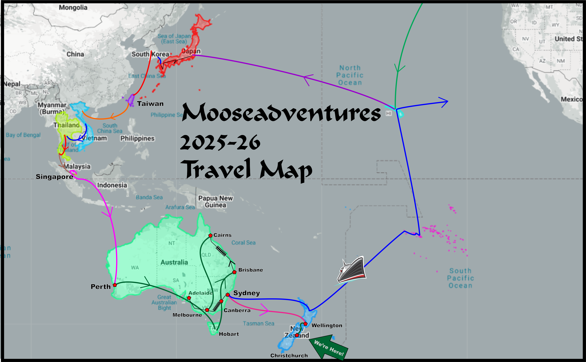

KHEVRON'S TRAVEL PAGE
Khevron (Don's) & Lareena's Mooseadventures Travel Pages
Summary and Thanks!
Overall Travel Map:

THANK YOU!
Thanks to all who helped us on our journey or made things possible!!
The Zellhuber family
Laurel Smith and
Chung in Miryang
Erica West!
Wendy Lee in Taiwan
Mai in Hanoi
SCA Folk in Perth and Hobart!
Fran Tilly!
Mari! and Yevan!
Jen and Morgaine in Sydney
Jen in Adelaide and Taupo!
Merridy Jackson
Clare! and Kate and Rosie in Wellington
SCA Folk in the Crescent Isles
Trudie Graham! & Rose
Jackson Treece
SCA Folk at Rowany Festival!
We made SO MANY New friends, we can't even list them,
but they're scattered in all the places we visited!
You're really made this an amazing trip!
 Send me comments or whatever to my e-mail address:
Send me comments or whatever to my e-mail address:
So, some Rough Stats in conclusion:
Counting Out of the Country (Spent 15 (9+6) Days in Hawaii, and 15 (10+5) in Juneau) Months: 9, Days 233; Away from Home: 263 DaysCountry Count: 9: (days in each):
Japan (15), South Korea (13), Taiwan (10), Vietnam (14), Thailand (11), Singapore (7), Australia (80), New Zealand (80) and French Polynesia! (3)
Australia States: Western Australia, Tasmania, Queensland, Victoria, South Australia, New South Wales, Australian Capitol Territory.
Australia Cities: Perth, Hobart, Brisbane, Cairns, Melbourne, Adelaide, Canberra, Sydney.
Wildlife seen: Snails, Small Lizards, Macaques, Koala, Roos, Devil, Wombat, Echidna, Tiger Snakes, Wallabies, Dingo, Emu, Koalas, Dragon, Eel, Shark, Fish
Sea Turtle, Bats, Seals, Coneys, Llama, Sheep, Cows, Horses, Deer, Kea Bird, Cicadas!, Glow Worms, Cormorant, Gecko
Plus Zoos & Aquarium and the Great Barrier Reef!
High Temp 105F. Low Temp 36F
Airlines: Asiana, VietJet, AirAsia, Singapore Airlines, Jetstar, Qantas, Alaska Airlines
#Days in the Tropics: 57
Bicycle Days: 3
Rental Car Days: 7
Camper Van Days: 35 (19)
Overnight Train: 1
High Speed Rail: 6
Inter-city Buses: Many
Ferry Boat: 6
Cruise Ship Days: 18
Caves: 2
Pools: 8
Movies seen: 2 (Tron: Ares, Avatar: The Way of Water)
Photos/Videos: Donovan: 52,500-ish (720gigabytes) Lareena: ?
Just under 200/day!